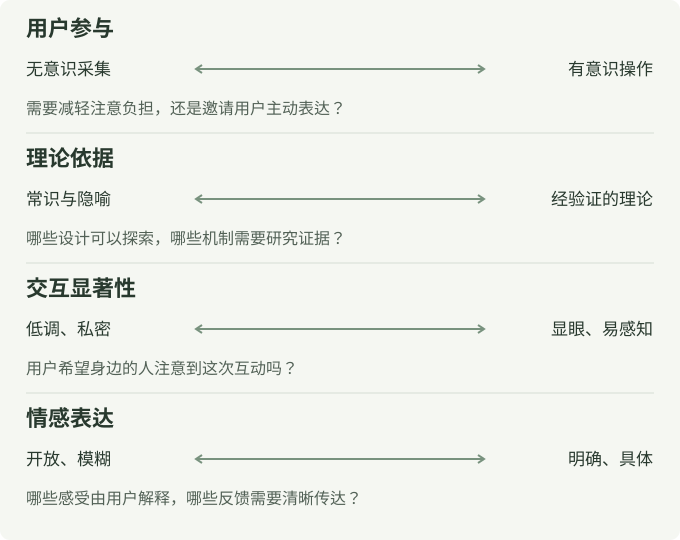

具身情感交互框架
从 50 篇论文中梳理身体动作、材料与多感官反馈如何支持情感体验。
项目类型：系统性文献综述 / 情感交互 / 设计框架
个人贡献：第一作者，负责全部纳入文献的数据提取与初始编码，与合作者共同分析主题、迭代框架及讨论设计启示。
研究成果：发表于 ACM DIS 2024；纳入 50 篇论文，归并为 49 个分析条目，提炼三类设计考量与四个设计维度。
研究背景与目标
身体动作、实体材料与多感官反馈，被用于情感表达、沟通、理解与调节。但不同研究的设计目的、交互形式和评估方式较为分散。
本研究希望梳理三个问题。
- 为什么选择实体交互支持情感体验？
- 身体动作与系统反馈如何关联情感？
- 已有研究能为后续设计与评估提供什么依据？
研究方法与分析过程
遵循 PRISMA 流程，结合分类统计与归纳式主题分析，梳理系统的情感目标、输入输出、情感映射方式及用户评估结果。
数据库检索获得 2,449 条记录，经筛选与全文评估，最终纳入 50 篇论文，归并为 49 个分析条目。
分析覆盖系统的设计目的、采用实体交互的原因、情感相关输入与输出、设计依据，以及评估方法和结果。
研究发现与设计考量
通过实体形式呈现情感含义
颜色、温度、力度与运动等线索，可以承载情感表达。设计需要考虑用户如何理解这些线索，以及个人经历和文化背景带来的解释差异。
支持有表现力的交互
身体动作、灯光、声音和触觉，都可以帮助用户表达或感受情绪。设计时，需要明确每种动作和反馈的作用。例如，呼吸训练需要清楚地提示节奏，表达心情的装置则可以允许用户用自己喜欢的颜色代表当天的心情。
让交互适应日常活动
在办公、课堂和日常沟通等情境中，系统需要兼顾用户的主要任务、注意力与隐私。低干扰的交互方式，以及开始、中断和退出的安排，会影响实际使用。
设计框架与应用方式
研究归纳出四个需要权衡的设计维度，用于帮助设计者讨论方案中的具体选择。

| 设计维度 | 两端及其取舍 | 设计时需要回答的问题 |
|---|---|---|
| 用户参与 | 无意识采集降低主动输入负担，有意识操作支持表达与反思 | 何时自动感知，何时邀请用户主动参与？ |
| 理论依据 | 常识与隐喻支持设计探索，已验证知识为设计提供依据 | 输入与反馈的情感含义来自什么依据？ |
| 交互显著性 | 低调交互保护隐私，显眼交互能够引起注意并支持表达 | 谁会注意到这次互动，用户希望它被看见吗？ |
| 情感表达 | 模糊表达保留解释空间，明确表达更易理解和评估 | 哪些信息需要清楚，哪些可以留给用户解释？ |
在具体方案中，可以沿着四个维度讨论选择及其适用情境。例如，自动感知与主动输入如何配合，动作隐喻如何被理解，反馈是否适合公共环境，以及系统为用户保留多少解释空间。
研究总结与后续方向
研究梳理了实体交互支持情感体验的方式，并形成了三类设计考量与四个设计维度。
已有研究也留下三个值得继续探索的问题。
- 如何在真实生活情境中理解和评估情感交互。
- 如何利用身体动作表达或影响情感体验。
- 如何建立便于比较不同方案的评估依据。
这些问题为后续用户研究、原型探索与实地验证提供了方向。
论文：Zhou, N., Devleminck, S., & Geurts, L. (2024). Tangible Affect: A Literature Review of Tangible Interactive Systems Addressing Human Core Affect, Emotions and Moods. ACM DIS. 论文链接
← 返回作品集